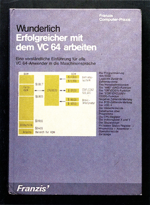
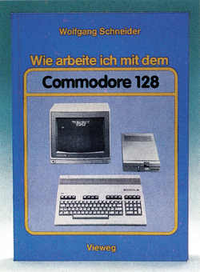
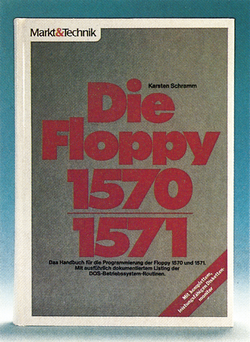
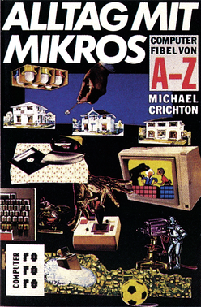
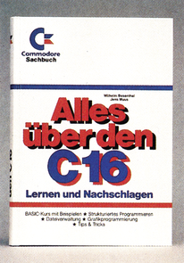

Literatur für Einsteiger
Auf dieser Seite haben wir Ihnen wieder einige Bücher zusammengestellt, die dem Einsteiger helfen, die Anfangsklippen zu umsegeln. »Wie arbeite ich mit dem Commodore 128« behandelt dabei den C 128 mit all seinen Möglichkeiten, Betriebsarten und Peripheriegeräten, »Erfolgreicher mit dem VC 64 arbeiten« vermittelt einen Einstieg in die Assembler- und Maschinenprogrammierung auf dem C 64 und schließlich sagt Ihnen »Die Floppy 1570/1571« alles, was Sie zur Programmierung Ihrer Floppy-Stationen 1570 und 1571 von Commodore wissen müssen.
Erfolgreicher mit dem VC 64 arbeiten

Mit diesem Buch wird der Autor all diejenigen C 64-Besitzer erreichen, die sich gerade überlegen, wie sie den Sprung »ins Eingemachte«, nämlich die Programmierung in Maschinensprache, schaffen sollen. Dieses Werk berücksichtigt nun die ganze Komplexität des Themenbereiches und widmet sich diesem »von der Pike« auf.
Der Verfasser, selbst Diplomingenieur, beginnt das Buch mit der Vermittlung von Grundlagen der Digitaltechnik, beschreibt die Funktion verschiedener Zahlensysteme und gibt als Abschluß des ersten Teils des Buches einen Überblick über das grundlegende Funktionsprinzip eines Mikrocomputers, um dann speziell auf den Prozessor 6502 und seinen Befehlssatz einzugehen.
Hierbei werden sowohl Grundlagen im Umgang mit Zahlensystemen wie binär und hexadezimal vermittelt, wichtige Begriffe wie etwa das Zweierkomplement (leider im Buch mit Ausnahme des Stichwortverzeichnisses falsch geschrieben) und BCD-Zahlendarstellung eingeführt und nicht zuletzt die elementaren Rechenprozesse wie Addition, Subtraktion etc. anhand eines Beispieles sowohl in dezimal, als auch binär erklärt. Die Beschreibung des 6502-Befehlssatzes ist erfreulicherweise in Befehls- und Funktionsgruppen untergliedert, was die Suchenach einem Befehl bestimmter Funktion sehr erleichtert.
Der zweite Teil des Buches beschäftigt sich dann im besonderen mit dem C 64 und seinen Eigenheiten. In gesonderten Kapiteln wird der Speicheraufbau und die Speicherverwaltung dem Leser genauestens dargestellt, im folgenden Abschnitt wird das Augenmerk besonders auf die Interface-Bausteine des C 64 gerichtet. Dabei werden die einzelnen Register und deren Programmierung sehr genau beschrieben.
Im dritten Teil werden einige kleine, aber nützliche Programme besprochen, die den Anwender auch zu selbständigen Arbeiten anregen sollen. Dieser Teil des Buches ist gerade für den Einsteiger sehr empfehlenswert, hat er hier doch die Möglichkeit, seine bereits vorhandenen Kenntnisse durch Übung zu erweitern.
Weiterhin findet man über das ganze Buch verstreut zahllose Tabellen, die sowohl eine Hilfe für den Anfänger, als auch ein Nachschlagewerk für den Routinier darstellen. Im Anhang gibt es dann noch eine ausführliche Liste der ROM-Routinen mit hexadezimalen und dezimalen Adressen sowie eine Umrechnungstabelle von hexadezimal nach dezimal und umgekehrt.
Als fortgeschrittener Programmierer wird man sich über Feinheiten des Buches freuen, beispielsweise der Aufstellung einiger brauchbarer zusätzlicher Gillegaler«) Operationscodes des 6502 oder der Beschreibung des Maskenfehlers der CPU.
Alles in allem kann man feststellen: Sowohl für den Einsteiger, als auch für den geübten Basic-Programmierer ist dieses Buch sehr gut geeignet, um sich alle nötigen Grundlagen im Umgang mit der Maschinensprache anzueignen.
(Udo Reetz/ev/bj)Franz Wunderlich, Erfolgreicher mit dem VC 64 arbeiten, Franzis-Verlag GmbH, 192 Seiten, ISBN 3-7723-7781-5, Preis: 38 Mark
Wie arbeite ich mit dem Commodore 128?

Unter dieser Fragestellung geht der Autor Wolfgang Schneider an den Themenkomplex C 128 heran. Das gut durchdachte Konzept konzentriert das Wesentliche zudem jeweiligen Thema, ohne sich von der Informationsflut der dargestellten Materie überrollen zu lassen oder in die häufig verwendete Fachsprache zu verfallen. Das Buch wendet sich besonders an C 128-, aber auch C 64-Einsteiger. Es verbindet die Einführung in dasneue MediumC 128 mit komprimierter, oft tabellarischer Information, die dennoch anspricht. Weiterhin werden Hinweise, Leitsätze, Erklärungen und verständliche Definitionen optisch markiert, was das Herauskristallisiieren von besonders wichtigen Informationen erleichtert. Praktisch alle Gebiete, die unter der obigen Zielsetzung relevant sind, werden behandelt: Es fehlen weder die drei verschiedenen Betriebsarten des C 128, allgemeine Überblicke über Programmierung, Hardware desC 128 und dessen möglicher Peripherie, noch das Arbeiten mit Basic-Programmen, Kassettenrecorder oder Floppy-Laufwerken. Auch Grafik, Musik und Sprachumfang des C 128 anhand kleiner Beispiele sind Teilgebiete des Buches. Fazit: Wer gerne mehr über seinen C 128 wissen möchte und die Informationen verständlich aber komprimiert bevorzugt, dem sei dieses Werk wärmstens empfohlen. Nachdem man sich das Hintergrundwissen angeeignet hat, kann man immer noch auf fachspezifische Bücher umsteigen.
(J. Rieder/bj)Wolfgang Schneider, Wie arbeite ich mit dem Commodore 128, Vieweg-Verlag, 342 Seiten, ISBN 3-528-04472-1, Preis 48 Mark
Die Floppy 1570/1571

Dieses im Markt & Technik Verlag erschienene Buch behandelt auf das ausführlichste die beiden Floppy-Stationen 1570 und 157] von Commodore. Das Besondere beider Laufwerke ist die Tatsache, daß sie mehrere Diskettenformate lesen und auch schreiben können, und dieser Sachverhalt bildet den Schwerpunkt des Buches.
Neben den, auch in der Anleitung von Commodore stehenden Tatsachen, die für den Einsteiger wichtig sind, widmet sich das Buch vor allem den Bereichen, die in sonst vorhandener Lektüre gar nicht oder nur unvollständig und schwer verständlich behandelt werden.
Das Kernstück des Buches ist dabei das ausführlich und gründlich dokumentierte DOS-Listing, das keine Wünsche mehr offenläßt. Der beschreibende Text ist so ausführlich, daß er auch ohne die nebenstehenden Assemblerbefehle zusammenhängend gelesen und verstanden werden kann.
Für den Anfänger beinhaltet das Buch alle wichtigen Grundlagen, die ausführlich und leicht verständlich erklärt sind. Der fortgeschrittene Programmierer findet in dem Buch alle wichtigen Einzelheiten, die ihn zum Profi werden lassen. Der Profi schließlich erhält ein rundum gelungenes Nachschlagewerk, das, mit vielen Tabellen und Verzeichnissen ausgestattet, ein hervorragender Helferbeiallen Problemen ist.
Insgesamt ein sehr sorgfältig zusammengestelltes Werk, das kaum noch Wünsche bezüglich Informationen zu den Laufwerken 1570 und 1571 offenläßt.
(Martina Müller/bj)Karsten Schramm, Die Floppy 1570/1571, Markt & Technik Verlag AG, Hans-Pinsel-
Str. 2, 8013 Haar bei München, 470 Seiten, ISBN 3-89090-185-9, Preis: 52 Mark
Alltag mit Mikros — Computerfibel von A—Z

In immer größerem Umfang werden Computer in den nächsten Jahren unser aller privates und gesellschaftliches Leben bestimmen und verändern. So istesunbedingtnötig, daß jeder, der mitreden und die Entwicklung beurteilen will, über Fachbegriffe und Grundlagen informiert ist. Einen gelungenen Versuch, dem Neuling umfassende Anfangskenntnisse zu vermitteln, macht die »Computerfibel Alltag mit Mikros« des Amerikaners Michael Crichton. Aber auch der schon vorgebildete Leser erfährt durch das Buch noch manches Neue, was ihn zum Nachdenken anregen könnte.
Obwohl der Autor seine Themen alphabetisch geordnet hat, ergibt sich eine scheinbar zwangslose Abfolge, in der alles zum Thema gehörende logisch und verständlich erklärt wird. Sorgfältig wird zwischen Nutzen und Gefahren abgewogen, man findet keine oberflächliche Verherrlichung oder Verteufelung. Besonders eindrucksvoll ist der Vergleich des Computers mit einem geerbten Buttler, von dem man als Normalbürger zunächst auch nicht wüßte, wie er einem helfen kann. Man spricht dessen Sprache nicht, er aber versteht auch die Sprache seines neuen Herrn nicht. Ob und welchen Nutzen man schließlich durch das »Erbstück« hat, hängt von einem selbst ab. Schlußfolgerung: Man kann auch ohne Buttler und ohne Microcomputer leben. Bei vernünftigem Umgang und nach einem gewissen Lernprozeß können beide allerdings auch das Leben erleichtern und neue Möglichkeiten eröffnen.
(D. Hein/ev)Info: Michael Chrichton, »Alltag mit Mikros — Computerfibel von A—-Z«, Rowolt Taschenbuch Verlag, 240 Seiten, ISBN 3-499-18129-0, Preis 12,80 Mark
ALLES ÜBER DEN C 16

Das neue Buch aus der Commodore-Sachbuchreihe hält wirklich, was der Titel verspricht. Auf 292 Seiten wird dem Leser in verständlicher Weise alles Wissenswerte über den C 16 mitgeteilt. Das Buch bietet sowohl für Anfänger als auch für fortgeschrittene Programmierer nützliche Informationen über ihren Commodore-Computer. Der Inhalt des Buches umfaßt folgende Sachgebiete: ausführlicher Basic-Kurs strukturiertes Programmieren Dateiverwaltung Grafikprogrammierung nützliche Tips und Tricks
Zu Beginn geht der Autor kurz auf den allgemeinen Aufbau eines Computers und die verwendeten Zahlensysteme ein. Die Kapitel »Rechnen mit dem Computer«, »Logische Verknüpfungen« und »Vergleichsbefehle« bilden den Anfang des Basic-Kurses. Mit der Grafik und Farbprogrammierung beschäftigt sich der Autor im Kapitel »Die hochauflösende Grafik des C 16«. Für fortgeschrittene Programmierer bieten die Abschnitte »Disketten-Programmierung«, »Direkter Speicherzugriff« und »Fehlerbehandlung« nützliche Tips und Anregungen. Das letzte Kapitel »Maschinensprache mitdemC l&«gibteinen kleinen Einblick in die Welt der Maschinensprache und deren Programmierung mit Hilfe des TEDMON's. Im umfangreichen Anhang des Buches findet der Leser nützliche Tabellen, Adressen, Register, sowie alle Anschlußbelegungen des C 16/116. Fazit: Ein nützliches Buch für alle C 16-Besitzer. Es dient sowohl dem Einsteiger zum»hautnahen« Erlernen der Programmiersprache Basic 3.5, als auch dem fortgeschrittenen Programmiererin Form eines nützlichen Nachschlagewerkes mit vielen Tabellen und Informationen, die nicht im Handbuch stehen.
(C.Q. Spitzner/bj)Info: Wilhelm Besenthal/Jens Muus, Alles
über denC 16, Markt & Technik Verlag, 292 Seiten, ISBN 3-89090-385-1, Preis 39 Mark